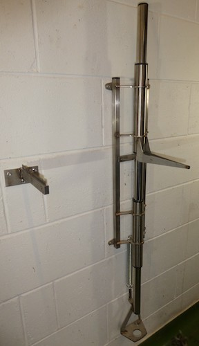

Game-Bird Processor

The game-bird processor is a machine designed to produce an oven-ready bird in less than 30 seconds. It allows for the rapid and efficient processing of game-bird meat and prevents the wasting of shot birds. It was conceived and designed by Dougie Bell, a former Keeper of both upland and lowland sport. The machine is marketed by T.W Relph and Sons Ltd., Penrith, Cumbria.
Key features
- The machine is made of 100% stainless steel. It is made locally in Cumbria by a precision engineer, and is both robust and simple in design and use.
- The first part of the processor is a serrated saw which can be fastened by two substantial screws to a wall. It is only 8 inches long and is supplied with a safety cover. The main body of the machine measures 53 inches long from top to bottom and 8 inches across from the outside of the fixing holes. The machine has four fixing holes. The wedge that holds the bird protrudes 12 inches outwards from the wall and is also supplied with a safety cover.
- It is easy to fit in any area designated for dressing game-birds.
- Very easy to wash and clean and will never rust.
- The machine meets Food Standards Agency Requirements. It is important to place the serrated saw at a safe distance from the main body of the machine so as to prevent cross-contamination.
Key Steps
- Use the blade to remove the wings of the bird. Hold the body of the bird in one hand, whilst using your other hand to push down and remove the wings.
- Using your thumb press into the skin of the bird just above the crop. Pull the crop down, revealing the cavity under the breastbone.
- Transfer to the main machine. Using the opening you have made with your thumb, insert the bird, breast facing upwards, onto the protruding wedge of the machine.
- Push down on both sides of the body of the bird, peeling back the skin and dislocating the legs.
- Hold the body of the bird from above with one hand and step on the pedal below with your foot. With your other hand catch and dispose of the unwanted parts of the bird. You are left with the breast of the game-bird you have prepared.
Feedback
The machine has been highly acclaimed by both Gamekeepers and Game dealers alike. It has also received a very favourable review in the February 2020 edition of the Shooting Times.